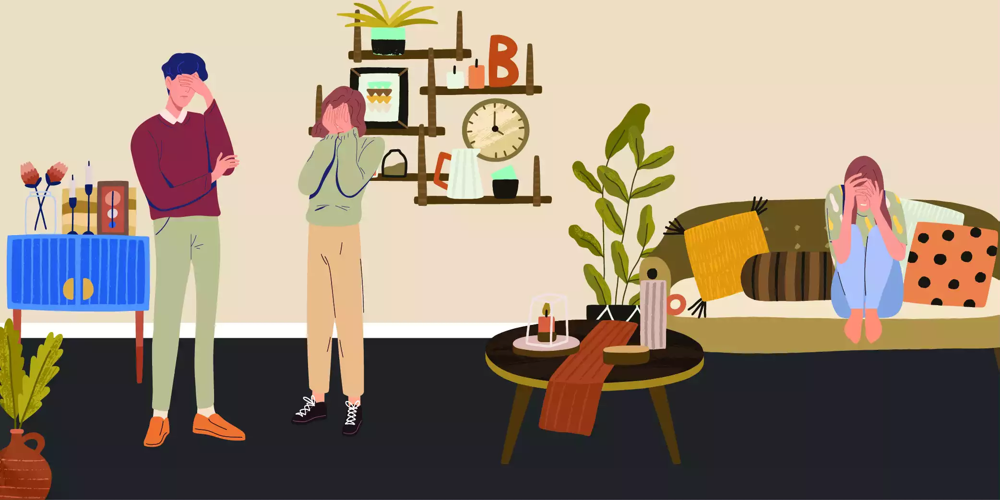
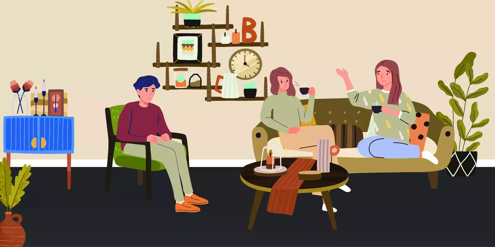

Background
Losing a loved one is a common life event. Death of a parent, partner or a much-loved family pet. There is a mourning process following the loss. Most go through this period without severe heartache or mental turmoil. People learn ways to cope.

What should normal grief feel like?
There is no such thing as a normal grief reaction. Rather everyone grieves in their own way. Bereaved individuals often feel a sense of loss or disconnection with their surroundings, themselves and the person they have lost. There can be waves of sadness, shock and disbelief, but also moments of positive emotions, love and fond memories. Wakes, funerals and other cultural events play a part here to aid healing. Over time people accept the finality and consequences of the loss. They are able to re-vision a future without the significant other. Generally, grief can be broken down into two phases. 1) The acute shock of the loss. This occurs days to months after the loss. 2) Integrated grief or longer-lasting feelings of loss that go alongside moving forward with the death of the loved one.
Care for grief
All grieving people should be offered compassionate care. People suffering a loss can turn to friends, family and their GPs. Often compassionate care is about accepting, normalizing grief and bearing witness to it.
How to care for someone who is grieving?
This could be an entire article in itself, here we will try to provide a few pointers.
- Care can be demonstrated both verbally and non-verbally. Body language is important, use a caring tone of voice and give your full attention.
- Encourage the grieving person if able to talk about the relationship, what it meant to them. Inquire if safe to do so about the death and what it has been like for the person and others following the death.
- Together explore what other supports are available. Look at practicalities, basics such as meals, arranging the deceased affairs etc. Organize to speak together soon. Check up on the grieving person.
Complicated Grief
Complicated Grief & Loss is a term used to describe those who struggle with a prolonged impaired sense of loss. Unfortunately, it is a common condition. Various other terms are used to describe it; including pathological grief, unresolved grief and traumatic grief. However, this isn’t the case for everyone. Close to 10% of the population experiencing a loss develop a complicated grief reaction. There are well documented longer-term consequences to both physical and mental health. Researchers renamed the entity Prolonged Grief Reaction. There are now diagnostic criteria that are used by both clinicians and researchers.
Defining Prolonged Grief Reactions
They are defined as a combination of cognitive, emotional and behavioural disturbances, that last for more than 6 months following the death of a significant other. There is a yearning for and preoccupation which consistently remains. Over time functioning, ability to cope which is thought to improve remains impacted.
Risk factors for Grief & Loss
- Understandably a parent losing a child can trigger a strong grief reaction. A tear of that nature to a parent-child bond can be devastating.
- The trauma associated with suicide, accidental death or murder adds layers to the sense of loss. Grief following such events tends to be more prolonged and intense.
Consequences of prolonged grief reactions
Everyone experiences grief in different ways. It is a personal, individual process. What we know from research is that there are both physical and psychological impacts of Grief & Loss.
Physical
- Increased heart problems or higher blood pressure.
- Weight changes or digestive problems
- Poor sleep or low energy levels
Psychological
- Higher rates of depression
- Increased rates of suicidal thinking and behaviour
- Sense of blame
- Lack of companionship.
Social
- Homelessness or poverty
- Financial problems
- Exclusion from social circles, religious or cultural groups.
Diagnosis of Prolonged Grief Disorder
There are various diagnostic criteria for Grief & Loss reactions and disorders. Below we will expand on the World Health Organizations diagnostic criteria for Prolonged Grief Disorder. It focuses on 6 key tenants: – Loss of a loved one – Persistent or pervasive grief reaction, characterized by longing, preoccupation or intense pain. – Daily experiencing emotional and behavioural symptoms of loss. – A grief response that is longer than expected; 6 months or more. – The grief reaction has caused significant impairments in personal, family social and work life. – The reaction is not better explained by another mental health issue or disorder. There are often common thinking patterns or styles following grief. For instance, catastrophizing a future without a loved one or second-guessing oneself. Similar to trauma experiences, people experiencing complicated grief may avoid reminders or get intrusive thoughts. Emotional ups and downs can also be a feature.
Impediments to integrating loss and moving forward
Everyone grieves at our pace, each of us is unique. Some factors can get in the way of recovery from grief. For example:
- Unhelpful patterns of thinking. Take for instance self-blame or a tendency to catastrophize things. If we blame ourselves for the death or view it as impeding our lives excessively; that might get in the way of working through the loss healthy.
- Repeated delays to attending to affairs. It can be very hard following the death of a loved one to arrange their affairs. Dealing with banks, real estate agents etc. can feel like an unwanted weight or burden. Repeatedly putting off these activities will slow down recovery
- The death of a loved one can be overwhelming. We all struggle with our emotions, which then impacts our behaviour. Our emotional ups and downs over a lengthy period of time get in the way of sleep, good diet and isolate us. This can slow us down from moving forward with our loss.
- Unique circumstances. For instance, losing two people (multiple losses) by way of a car accident (unexpected tragedy) can make adapting much more difficult. If someone has had a hard upbringing with inadequate support and conflicts at home; these can add layers of complexity making the loss harder to integrate and work through.
- Certain psychiatric illnesses can make coping with a loss harder. For example separation anxiety, alcohol use to numb emotions or depression. A significant loss could push someone at risk of depression into a major depressive episode.
Questions your clinician may ask during a grief assessment
Grief assessments may be done as part of a holistic mental health assessment or they may be done separately. Loss is hard to talk about. You and your therapist may decide to assess your grief over a couple of sessions. Here are the sorts of questions they may ask.
- What difficulties are you having to accept the death?
- How is the loss still interfere with your life?
- Are you getting intrusive thoughts or images about death?
- Have you been avoiding certain things or been isolating yourself from others?
- They will want to know a bit about your past mental health history, past treatments and how it has been for you?
- If you have felt suicidal or been using alcohol or other substances to help numb your emotions and cope.
These are just some of the questions that your doctor or therapist may ask. These questions can also be used as a chance to self reflect. To help you understand how you are coping.
Interventions or treatments
There is no strong evidence base for the treatment of complex or prolonged grief reactions. Over the years different researchers have looked at various interventions. We will list a couple below. It is important that both the client and therapist are comfortable with the proposed intervention. Also, that progress is reviewed frequently.
- Family-based interventions. These sessions are attended by adult members of the immediate family. They involve learning about Grief & Loss and how to challenge unhelpful thought patterns. These sessions can be run by a mental health nurse, trained support workers, psychologists or psychiatrists.
- Bereavement support groups. These are groups for those going through loss. Learning is helped via a facilitator and group learning. The material covered includes cognitive strategies to help cope and social interventions.
- Therapy with a focus on interpersonal or existential issues. This can be done either 1:1 or in a group setting.
- Wiring as means of working through loss. Prof Penne baker’s work on writing about emotions and grief have been studied and widely cited. These structured interventions may help those who journal or write.
- Internet-based therapies combine cognitive-behavioural therapies and writing exercises to help.
Recovery following a loss is an individual process. The support that will work for you depends on your personal circumstances. It is important to understand grief, manage one’s emotions, reconnect with others and share your experiences. We can learn strategies that will help us cope; either online, from support groups or a psychologist or other mental health clinician.

At Epsychiatry we know that grief is painful and personal, that it is long-lasting. Therapy and other supports are meant to help with moving forward. If you would like to speak to one of our professional psychiatrists or psychologists about your loss; let us know. You can reach us either via webchat, email or by phone. Our details are at the bottom of this page.